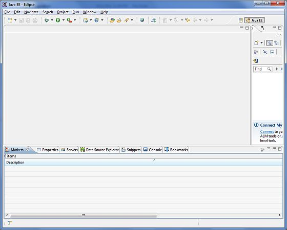

JSF - Environment Setup
This tutorial will guide you on how to prepare a development environment to start your work with JSF Framework. This tutorial will also teach you how to setup JDK, Eclipse, Maven, and Tomcat on your machine before you setup JSF Framework:
System Requirement
JSF requires JDK 1.5 or higher so the very first requirement is to have JDK installed in your machine.
| JDK | 1.5 or above. |
|---|---|
| Memory | no minimum requirement. |
| Disk Space | no minimum requirement. |
| Operating System | no minimum requirement. |
Follow the given steps to setup your environment to start with JSF application development.
Step 1 - Verify Java installation on your machine
Now open console and execute the following java command.
| OS | Task | Command |
|---|---|---|
| Windows | Open Command Console | c:\> java -version |
| Linux | Open Command Terminal | $ java -version |
| Mac | Open Terminal | machine:~ joseph$ java -version |
Let's verify the output for all the operating systems:
| OS | Generated Output |
|---|---|
| Windows |
java version "1.6.0_21" Java(TM) SE Runtime Environment (build 1.6.0_21-b07) Java HotSpot(TM) Client VM (build 17.0-b17, mixed mode, sharing) |
| Linux |
java version "1.6.0_21" Java(TM) SE Runtime Environment (build 1.6.0_21-b07) Java HotSpot(TM) Client VM (build 17.0-b17, mixed mode, sharing) |
| Mac |
java version "1.6.0_21" Java(TM) SE Runtime Environment (build 1.6.0_21-b07) Java HotSpot(TM)64-Bit Server VM (build 17.0-b17, mixed mode, sharing) |
Step 2 - Setup Java Development Kit (JDK):
If you do not have Java installed then you can install the Java Software Development Kit (SDK) from Oracle's Java site: Java SE Downloads. You will find instructions for installing JDK in downloaded files, follow the given instructions to install and configure the setup. Finally set PATH and JAVA_HOME environment variables to refer to the directory that contains java and javac, typically java_install_dir/bin and java_install_dir respectively.
Set the JAVA_HOME environment variable to point to the base directory location where Java is installed on your machine. For example
| OS | Output |
|---|---|
| Windows | Set the environment variable JAVA_HOME to C:\Program Files\Java\jdk1.6.0_21 |
| Linux | export JAVA_HOME=/usr/local/java-current |
| Mac | export JAVA_HOME=/Library/Java/Home |
Append Java compiler location to System Path.
| OS | Output |
|---|---|
| Windows | Append the string ;%JAVA_HOME%\bin to the end of the system variable, Path. |
| Linux | export PATH=$PATH:$JAVA_HOME/bin/ |
| Mac | not required |
Alternatively, if you use an Integrated Development Environment (IDE) like Borland JBuilder, Eclipse, IntelliJ IDEA, or Sun ONE Studio, compile and run a simple program to confirm that the IDE knows where you installed Java, otherwise do proper setup as given document of the IDE.
Step 3 - Setup Eclipse IDE
All the examples in this tutorial have been written using Eclipse IDE. So I would suggest you should have latest version of Eclipse installed on your machine based on your operating system.
To install Eclipse IDE, download the latest Eclipse binaries with WTP support from http://www.eclipse.org/downloads/. Once you downloaded the installation, unpack the binary distribution into a convenient location. For example in C:\eclipse on windows, or /usr/local/eclipse on Linux/Unix and finally set PATH variable appropriately.
Eclipse can be started by executing the following commands on windows machine, or you can simply double click on eclipse.exe
%C:\eclipse\eclipse.exe
Eclipse can be started by executing the following commands on Unix (Solaris, Linux, etc.) machine:
$/usr/local/eclipse/eclipse
After a successful startup, if everything is fine then it should display following result:
Step 4: Download Maven archive
Download Maven 2.2.1 from http://maven.apache.org/download.html
| OS | Archive name |
|---|---|
| Windows | apache-maven-2.0.11-bin.zip |
| Linux | apache-maven-2.0.11-bin.tar.gz |
| Mac | apache-maven-2.0.11-bin.tar.gz |
Step 5: Extract the Maven archive
Extract the archive, to the directory you wish to install Maven 2.2.1. The subdirectory apache-maven-2.2.1 will be created from the archive.
| OS | Location (can be different based on your installation) |
|---|---|
| Windows | C:\Program Files\Apache Software Foundation\apache-maven-2.2.1 |
| Linux | /usr/local/apache-maven |
| Mac | /usr/local/apache-maven |
Step 6: Set Maven environment variables
Add M2_HOME, M2, MAVEN_OPTS to environment variables.
| OS | Output |
|---|---|
| Windows | Set the environment variables using system properties. M2_HOME=C:\Program Files\Apache Software Foundation\apache-maven-2.2.1 M2=%M2_HOME%\bin MAVEN_OPTS=-Xms256m -Xmx512m |
| Linux | Open command terminal and set environment variables. export M2_HOME=/usr/local/apache-maven/apache-maven-2.2.1 export M2=%M2_HOME%\bin export MAVEN_OPTS=-Xms256m -Xmx512m |
| Mac | Open command terminal and set environment variables. export M2_HOME=/usr/local/apache-maven/apache-maven-2.2.1 export M2=%M2_HOME%\bin export MAVEN_OPTS=-Xms256m -Xmx512m |
Step 7: Add Maven bin directory location to system path
Now append M2 variable to System Path
| OS | Output |
|---|---|
| Windows | Append the string ;%M2% to the end of the system variable, Path. |
| Linux | export PATH=$M2:$PATH |
| Mac | export PATH=$M2:$PATH |
Step 8: Verify Maven installation
Now open console, execute the following mvn command.
| OS | Task | Command |
|---|---|---|
| Windows | Open Command Console | c:\> mvn --version |
| Linux | Open Command Terminal | $ mvn --version |
| Mac | Open Terminal | machine:~ joseph$ mvn --version |
Finally, verify the output of the above commands, which should be something as follows:
| OS | Output |
|---|---|
| Windows |
Apache Maven 2.2.1 (r801777; 2009-08-07 00:46:01+0530) Java version: 1.6.0_21 Java home: C:\Program Files\Java\jdk1.6.0_21\jre |
| Linux |
Apache Maven 2.2.1 (r801777; 2009-08-07 00:46:01+0530) Java version: 1.6.0_21 Java home: C:\Program Files\Java\jdk1.6.0_21\jre |
| Mac |
Apache Maven 2.2.1 (r801777; 2009-08-07 00:46:01+0530) Java version: 1.6.0_21 Java home: C:\Program Files\Java\jdk1.6.0_21\jre |
Step 9: Setup Apache Tomcat:
You can download the latest version of Tomcat from http://tomcat.apache.org/. Once you downloaded the installation, unpack the binary distribution into a convenient location. For example in C:\apache-tomcat-6.0.33 on windows, or /usr/local/apache-tomcat-6.0.33 on Linux/Unix and set CATALINA_HOME environment variable pointing to the installation locations.
Tomcat can be started by executing the following commands on windows machine, or you can simply double click on startup.bat
%CATALINA_HOME%\bin\startup.bat or C:\apache-tomcat-6.0.33\bin\startup.bat
Tomcat can be started by executing the following commands on Unix (Solaris, Linux, etc.) machine:
$CATALINA_HOME/bin/startup.sh or /usr/local/apache-tomcat-6.0.33/bin/startup.sh
After a successful startup, the default web applications included with Tomcat will be available by visiting http://localhost:8080/. If everything is fine then it should display following result:

Further information about configuring and running Tomcat can be found in the documentation included here, as well as on the Tomcat web site: http://tomcat.apache.org
Tomcat can be stopped by executing the following commands on windows machine:
%CATALINA_HOME%\bin\shutdown or C:\apache-tomcat-5.5.29\bin\shutdown
Tomcat can be stopped by executing the following commands on Unix (Solaris, Linux, etc.) machine:
$CATALINA_HOME/bin/shutdown.sh or /usr/local/apache-tomcat-5.5.29/bin/shutdown.sh